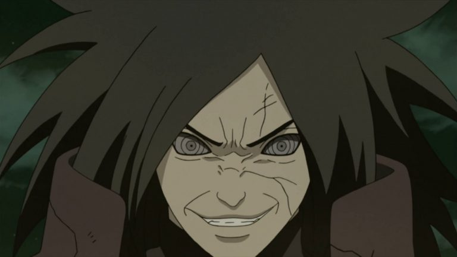
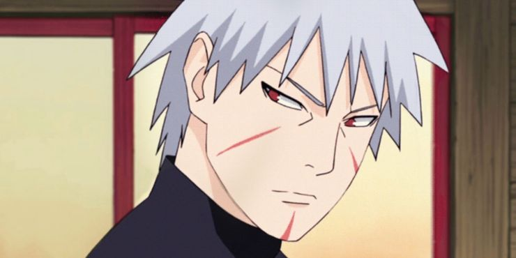
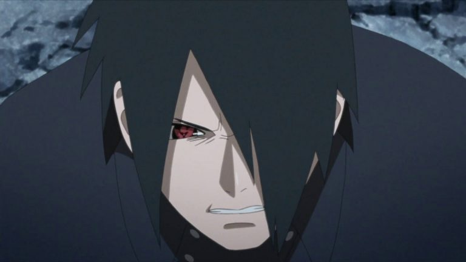
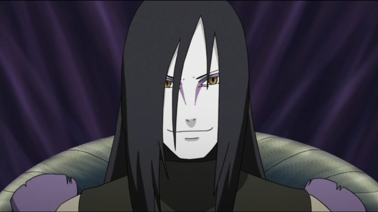
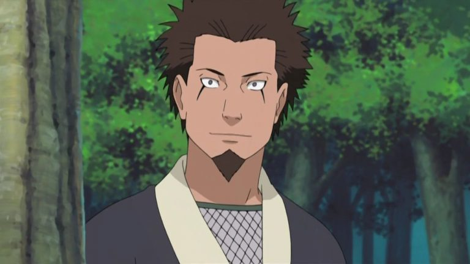
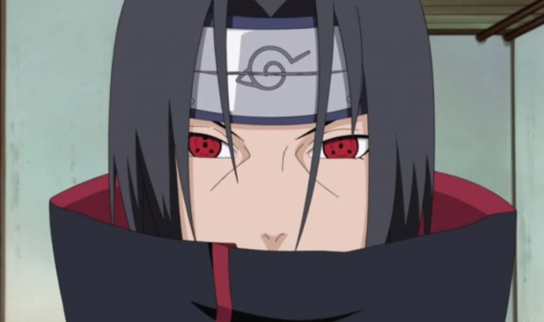
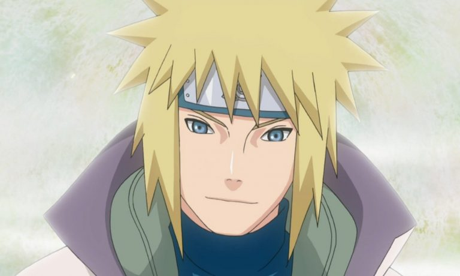
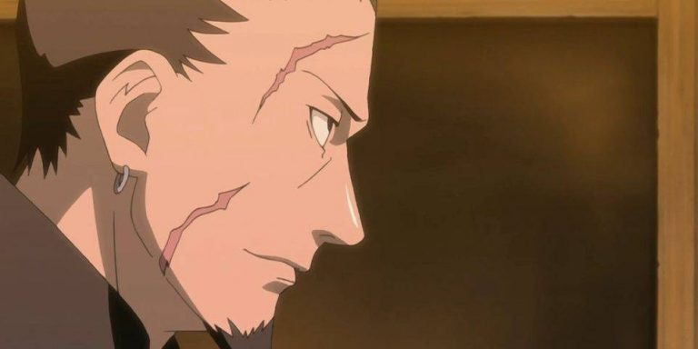

8 PERSONAGENS DE NARUTO QUE PODERIAM ENGANAR SHIKAMARU
Shikamaru Nara é conhecido como sendo o grande gênio intelectual do Mundo Ninja de Naruto. Tanto que em Boruto: Naruto Next Generations, o ninja acabou sendo promovido à braço direito do Hokage, devido a sua capacidade estratégica e agilidade mental, o que lhe conferem uma habilidade única de resolver problemas complexos sob pressão – algo essencial em batalhas ou situações críticas.
Mas isso não quer dizer que Shikamaru seja imbatível! Abaixo, vamos listar 8 personagens que já apareceram em Naruto que poderiam engana-lo facilmente. Confira!
Madara Uchiha
O lendário Uchiha também era conhecido por seu intelecto avançado, mas tem também como vantagem, um poder imenso, que não é facilmente igualado por qualquer um.
Madara conseguiu demonstrar suas habilidades táticas várias vezes durante a série, como quando conseguiu planejar seu renascimento com anos de antecedência – burlando várias pessoas e imprevistos no caminho.
O único motivo para Madara ter sido surpreendido por Zetsu no final da batalha contra o Time 7, é que Masashi Kishimoto realmente precisava encontrar uma forma de derrotar o vilão impossível que ele mesmo tinha criado.
Tobirama Senju
O Hokage mais importante de Konoha também era conhecido por ser um gênio brilhante. Além de ter transformado o status de Konoha durante sua gestão, Tobirama foi responsável pela crianção de uma infinidade de técnicas e jutsus secretos, que até hoje são considerados proibidos devido a sua dificuldade de manipulação.
Portanto, é justo imaginar que caso tivesse a oportunidade de enfrentar Shikamaru, ele provavelmente encontraria uma forma de supreende-lo, não dando chance para a mente sagaz do jovem Nara encontrar uma forma de sobrepujar a força e a inteligência do lendário Segundo Hokage.
Sasuke Uchiha
Sasuke também é conhecido por ser um personagem extremamente inteligente, e por mais que não tenhamos parâmetros exatos para determinar qual dos dois se sobressai neste sentido, é certo dizer que o Uchiha tem vantagem sobre Shikamaru graças ao Sharingan e ao Rinnegan, que lhe permitem ver com antecedência qualquer movimento do oponente.
Ou seja, Shikamaru teria que praticamente dar conta de lidar com dois dos dojutsus mais poderosos da série. Algo que por mais genial que seja, é praticamente impossível.
Orochimaru
Segundo o DataBook oficial de Naruto, Orochimaru e Shikamaru possuem a mesma nota no quesito inteligência: 5.0. Contudo, mais uma vez, Shikamaru teria uma severa desvantagem neste confronto já que Orochimaru é um ninja muito mais experiente e conta com um conhecimento aprofundado de jutsus e técnicas letais, capazes de surpreender Shikamaru de forma quase instantânea.
Hiruzen Sarutobi
Você pode até não concordar, mas o Terceiro Hokage é um dos ninjas mais poderosos de todos os tempos. E não somos nós quem estamos afirmando isso, mas sim o DataBook oficial de Naruto!
Em termos práticos, podemos afirmar que se Hiruzen foi capaz de dar conta de Orochimaru, ele conseguiria também encontrar uma forma de vencer Shikamaru. Mais uma vez, Shikamaru teria como principal desvantagem o fato de não possuir a mesma experiência que o seu oponente, que neste caso, é superior à de 95% dos demais personagens da série.
Itachi Uchiha
Desta vez a desculpa da experiência não seria mais aplicável, uma vez que o Shikamaru do qual estamos falando já viveu mais tempo e já enfrentou tantas situações complicadas quanto Itachi antes de sua morte.
Minato Namikaze
Minato Namikaze também possui estatísticas impressionantes segundo o DataBook oficial de Naruto. Contudo, acreditamos que o maior desafio de Shikamaru neste caso fosse ser sobrepujar não só a sagacidade de Minato, como também a própria Técnica do Deus Voador do Trovão.
Shikaku Nara
O pai de Shikamaru era igualmente impressionante em termos de inteligência e sagacidade, tendo também atuado como conselheiro do Hokage, e tendo sido a principal mente tática por trás da coalizão ninja, durante a Quarta Grande Guerra Ninja.
Além disso, foi o único oponente que Shikamaru jamais foi capaz de vencer no Shogi.